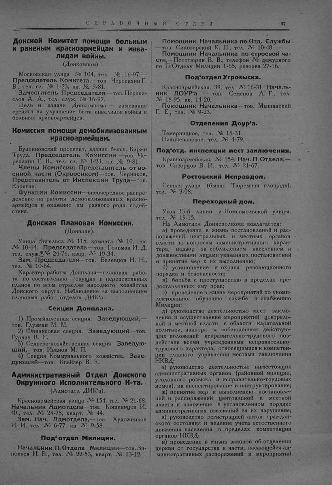

Лист источника 87
Скан

Распознанный текст
СПРАВОЧНЫЙ ОТДЕЛ 37
Донской Комитет помощи больным
и раненым красноармейцам и инва-
лидам войны.
(Донкомпом).
Московская улица № 104, тел. № 16-97. —
Председатель Комитета, — тов. Черепахин Г.
В., тел. сл. № 1-23, кв. № 9-81.
Заместитель Председателя — тов. Переки-
слов А. А., тел. служ. № 16-97.
Цель и задачи Донкомпома — изыскание
средств на улучшение быта инвалидов войны и
больных красноармейцев.
Комиссия помощи демобилизованным
красноармейцам.
Буденновский проспект, здание бывш. Биржи
Труда. Председатель Комиссии — тов. Че-
репахин Г. В., тел. сл. № 1-23, кв. № 9-81.
Члены Комиссии: Представитель от во-
енной части (Окрвоенком)—тов. Черников,
Представитель от Инспекции Труда — тов.
Карягин.
Функции Комиссии—внеочередное распре-
деление на работы демобилизованных красно-
армейцев и оказание им разного рода содей-
ствия.
Донская Плановая Комиссия.
(Донплан).
Улица Энгельса № 115, комната № 10, тел.
№ 10-64. Председатель—тов. Гольман И. Д.
тел. служ. № 24-76, квар. № 19-34.
Зам. Председателя—тов. Белевцов Н. Н.,
тел. № 10-64.
Характер работы Донплана—плановая рабо-
та по составлению текущих и перспективных
планов по всем отраслям народного хозяйства
Донского округа. Наблюдение за выполнением
плановых работ отделов ДИК'а.
Секции Донплана.
1) Промышленная секция. Заведующий, —
тов. Глузман М. М.
2) Финансовая секция. Заведующий — тов.
Гурвич В. С.
3) Сельско-хозяйственная секция. Заведую-
щий, — тов. Иванов М. П.
4) Секция Коммунального хозяйства. Заве-
дующий — тов. Квейзер В. К.
Административный Отдел Донского
Окружного Исполнительного К-та.
(Адмотдел ДИК'а).
Красноармейская улица № 154, тел. № 21-68.
Начальник Адмотдела — тов. Кошкинцев И.
Ф., тел. № 28-75, кварт. № 44.
Зам. Нач. Адмотдела, — тов. Художников
И. И. тел. № 6-77, кв. № 9-58.
Под‘отдел Милиции.
Начальник П/Отдела Милиции — тов. Зи-
новьев И. В., тел. № 22-53, кварт. № 13-12.
Помощник Начальника по Отд. Службы
— тов. Синозерский К. П., тел. № 10-48.
Помощник Начальника по строевой ча-
сти, — Потетюрин В. В., телефон № дежурного
по П/Отделу Милиции 1-65, резерва 27-16.
Под‘отдел Угрозыска.
Красноармейская, 39, тел. № 16-31. Началь-
ник ДОУР'а — тов. Семенов А. Г., тел.
№ 18-95, кв. 14-20.
Помощник Начальника — тов. Мышанский
Г. Е., тел. № 9-23.
Отделения Доур‘а.
Темерницкое, тел. № 16-31.
Нахичеванское, тел. № 4-79.
Под‘отд. инспекции мест заключения.
Красноармейская, № 154. Нач. П Отдела, —
тов. Скворцов В. И., тел. № 21-67.
Ростовский Исправдом.
Сенная улица (бывш. Тюремная площадь),
тел. № 3-08.
Переходный дом.
Угол 13-й линии и Комсомольской улицы,
тел. № 19-15.
На Адмотдел Донисполкома возлагается:
а) проведение в жизнь постановлений и рас-
поряжений центральных и местных органов
власти по вопросам административного харак-
тера, надзор за соблюдением населением и
должностными лицами указанных постановлений
и принятие мер к их выполнению;
б) установление и охрана революционного
порядка и безопасности;
в) борьба с преступностью в пределах пре-
доставленных ему прав;
г) проведение в жизнь мероприятий по укомп-
лектованию, обучению службе и снабжению
Милиции;
д) руководство деятельностью мест заклю-
чения и осуществление мероприятий централь-
ной и местной власти в области карательной
политики, надзора за соблюдением действую-
щих положений исправительно-трудового воз-
действия всеми учреждениями исправительно-
трудового характера, относящимися к компетен-
ции главного управления местами заключения
НКВД;
е) руководство деятельностью нижестоящих
административных органов (районной милиции,
уголовного розыска и исправительно-трудовых
домов), их инспектирование и инструктирование;
ж) принятие мер к выполнению постановле-
ний и распоряжений центральной и местной
власти и наложение в установленном порядке
административных взысканий за их нарушение;
з) руководство регистрацией актов граждан-
ского состояния и ведение учета естественного
движения населения в пределах компетенции
органов НКВД;
и) проведение в жизнь законов об отделении
церкви от государства в части, касающейся ад-
министративных распоряжений и мероприятий